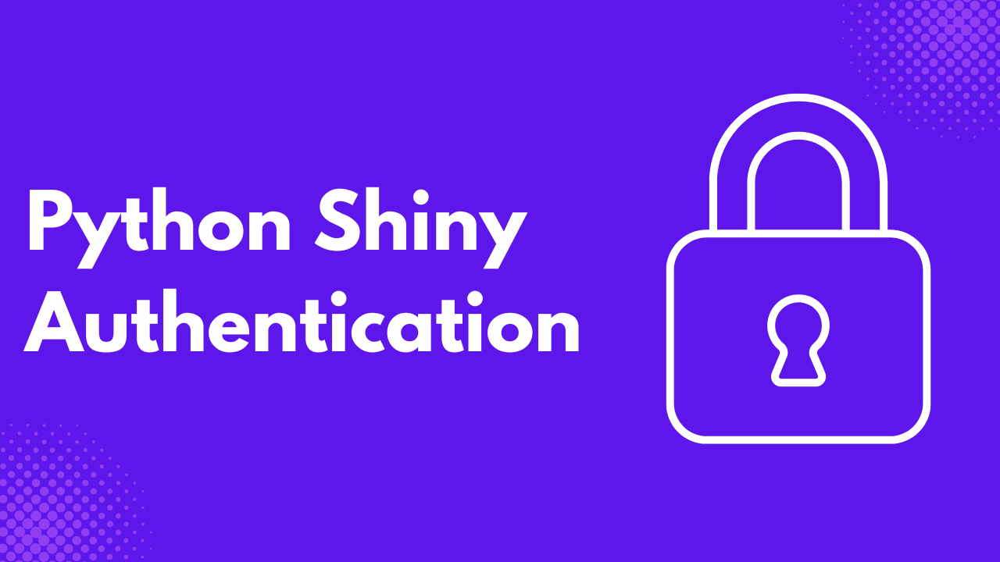
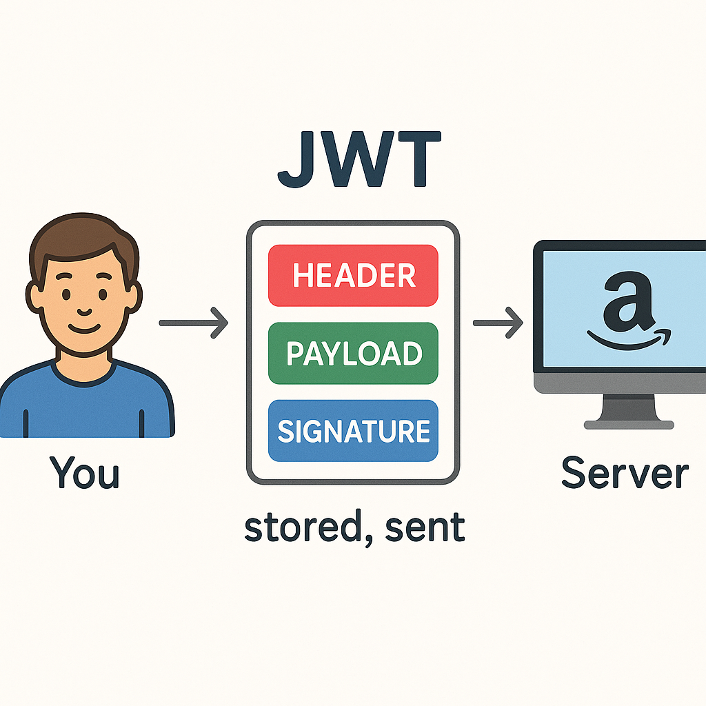
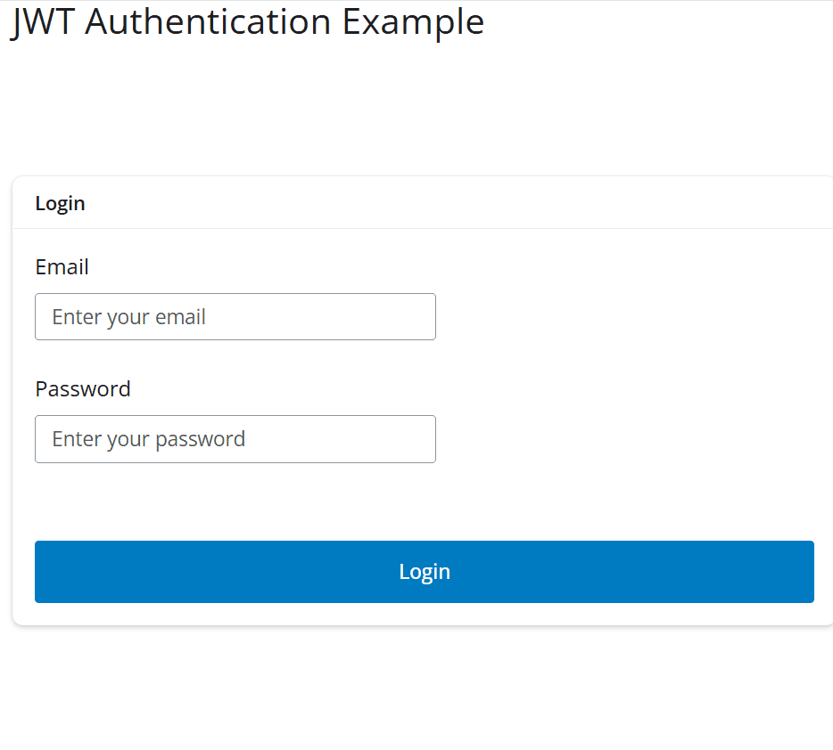

Imagine a house without a lock, how safe do you think the individuals in the house are at night, or when no one is at home. That’s why we need locks also in our applications, and in software we refer to these locks as authentication.
Authentication let’s you prevent unauthorized access to sensitive information on your application, by letting users authenticate before using your application, you are able to identify each user, and block users trying to compromise the system.
In this tutorial, you will learn how to authenticate users into your Python Shiny applications using JWT. With JWT, you don’t need third party applications or any paid authentication service, once you grasp the concepts of JWT, you can easily handle authentication on your site.
What is JWT?
JWT (JSON Web Token) is a compact, URL-safe way of representing claims between two parties, typically used for secure authentication and data exchange. It consists of three parts:
- Header: Specifying the token type and hashing algorithm
- Payload: Containing the claims (like user ID or roles)
- Signature: Used to verify the token’s integrity and authenticity. Once issued, a JWT can be sent with each client request (often in the HTTP header) so the server can validate the user without querying the database every time.
When you log into a website like Amazon, the server verifies your credentials and responds with a JWT. This token is stored in your browser (e.g., in local storage). On each subsequent request—like adding an item to your cart—the JWT is sent along, proving your identity without logging in again, until it expires.

Prerequisites
Before we get started, ensure you have the following:
- Python 3.9+ installed
- VS Code or any other IDE or code editor
- Install the following libraries:
- Basic understanding of how Python Shiny works
Set Up Your Working Environment
Create a folder for your project, give it a suitable name, and inside create the file app.py.
mkdir new_project
cd new_project
touch app.pyNext create a virtual environment and activate
# for linux
python -m venv venv
source venv/bin/activate
# for windows
py -m venv venv
venv/Scripts/ActivateInstall the needed libraries
pip install shiny PyJWTPassword Hashing
Inside app.py, create a SECRET_KEY variable.
SECRET_KEY = "your-secret-key-for-jwt"This secret string allows you to securely create and verify JWT tokens for login and authentication. Think of it like a private password used to sign and check your digital ID cards.
Create the following function hash_password inside app.py.
# Simple password hashing function using HMAC
def hash_password(password, salt=None):
if salt is None:
# Generate a random salt - converting to bytes
salt = base64.b64encode(hashlib.sha256(str(datetime.datetime.now().timestamp()).encode()).digest())
# Create an HMAC using SHA-256
hash_obj = hmac.new(salt, password.encode('utf-8'), hashlib.sha256).digest()
return {"hash": hash_obj, "salt": salt}This function takes a plain password and converts it into a secure hash. The salt is a random value added to make the hash harder to guess. If none is provided, the function creates a new one.
The hash_password function uses HMAC with SHA-256 to hash the password + salt securely, and returns both the hash and the salt so we can verify the password later.
# Verify a password against a stored hash
def verify_password(stored_password, provided_password):
hash_obj = hmac.new(stored_password["salt"], provided_password.encode('utf-8'), hashlib.sha256).digest()
return hash_obj == stored_password["hash"]The verify_passwordfunction checks if the password someone types in matches the stored hashed one. It re-hashes the entered password using the original salt, and returns True if the hashes match, otherwise False.
hashed_password = hash_password("password123")This hashes the password "password123" once when setting up the example user. Since we are not using a real databse, let’s use the following Python dictionary as our database and store the hashed_password .
USERS = {
"user@example.com": {
"password": hashed_password,
"name": "Demo User"
}
}Building the User Interface
Next, copy and paste the following code into app.py, to create the login_ui .
# UI for login page
login_ui = ui.div(
ui.card(
ui.card_header("Login"),
ui.input_text("email", "Email", placeholder="Enter your email"),
ui.input_password("password", "Password", placeholder="Enter your password"),
ui.div(
ui.output_ui("login_message"),
style="color: red; margin-top: 10px;"
),
ui.input_action_button("login_btn", "Login", class_="btn-primary"),
width="400px",
style="margin: 0 auto; margin-top: 100px;"
)
)The code above builds the login card for users to enter their credentials.
Copy and paste the following code to create the UI for the protected content.
# UI for protected content
protected_ui = ui.div(
ui.card(
ui.card_header(ui.output_text("welcome_message")),
ui.p("This is protected content that requires authentication."),
ui.input_action_button("logout_btn", "Logout", class_="btn-danger"),
width="800px",
style="margin: 0 auto; margin-top: 50px;"
)
)The code above is what shows after a user successfully logs in.
To create the root layout of the application, copy and paste the following code.
# Main UI that will switch between login and protected content
app_ui = ui.page_fluid(
ui.panel_title("JWT Authentication Example"),
ui.output_ui("main_content")
)You will use the ui.output_ui("main_content") as a placeholder to dynamicallly switch between login_ui and protected_ui .
Handling JWT
The next steps of building the application is going are under the server() side function of the shiny application.
def server(input, output, session):
# all other remaining code goes here Inside the server function, copy and paste the following code.
# Store the JWT token
token_value = reactive.value(None)
# Function to generate JWT token
def generate_token(email):
payload = {
'email': email,
'name': USERS[email]['name'],
'exp': datetime.datetime.utcnow() + datetime.timedelta(hours=1)
}
return jwt.encode(payload, SECRET_KEY, algorithm="HS256")The code above defines a reactive variable, token_value, to store a JWT, which starts as None. It also includes a function generate_token() that creates a JWT token for a given email. Inside the function, a payload dictionary is created that contains the user’s email, their name from the USERS dictionary using the email as a key, and an expiration time set to one hour from the current UTC. The function then returns the encoded JWT using the HS256 algorithm and a SECRET_KEY for signing. This token can is used for authenticating or identifying the user in subsequent requests.
Next, create the function to verify tokens inside the server function.
# Function to verify JWT token
def verify_token(token):
try:
payload = jwt.decode(token, SECRET_KEY, algorithms=["HS256"])
return payload
except jwt.ExpiredSignatureError:
return None
except jwt.InvalidTokenError:
return NoneThis function above checks the validity of a given JWT token. It attempts to decode the token using the same SECRET_KEY and the HS256 algorithm used during encoding.
If successful, it returns the decoded payload , which contains user information and the token’s expiration time.
If the token has expired (ExpiredSignatureError) or is otherwise invalid (InvalidTokenError), the function returns None, indicating that the token is not valid or cannot be trusted.
Displaying the UI
Inside the server function you created earlier on, paste the following at the end.
@render.ui
def main_content():
"""Render either login UI or protected content based on authentication status"""
if token_value() is None:
return login_ui
else:
# Verify token before showing protected content
payload = verify_token(token_value())
if payload:
return protected_ui
else:
# Token is invalid or expired
token_value.set(None)
return login_uiThis code above defines a UI rendering function main_content() using the @render.ui decorator, which dynamically displays either a login interface or protected content based on the user’s authentication status.
If token_value() is None, meaning no token is stored, it returns the login_ui, prompting the user to log in. If a token exists, it attempts to verify the token using verify_token(token_value()).
If the token is valid, it returns protected_ui, giving the user access to restricted content. If the token is invalid or expired, it clears the stored token by setting token_value to None and returns the login_ui again, forcing the user to log in.
@render.ui
def login_message():
"""Display login error messages"""
if input.login_btn() > 0:
email = input.email()
password = input.password()
# Basic validation
if not email or not password:
return ui.p("Please enter both email and password")
# Check credentials
if email not in USERS:
return ui.p("Invalid email or password")
# Verify password
if not verify_password(USERS[email]["password"], password):
return ui.p("Invalid email or password")
# Generate token on successful login
token_value.set(generate_token(email))
return ui.p("")
return ui.p("")The above code defines a reactive UI function login_message() using the @render.ui decorator, which displays login-related messages based on user input.
It triggers when the login buttoninput.login_btn() is clicked, that is its value is greater than 0. The function retrieves the entered email and password, then performs basic validation: if either field is empty, it shows an error message prompting the user to fill both. If the email doesn’t exist in the USERS dictionary or the password verification via verify_password()fails, it returns a generic "Invalid email or password" message.
If both credentials are valid, it generates a JWT token using generate_token() and stores it in token_value, effectively logging in the user. If no login attempt has been made yet, or after a successful login, it returns an empty paragraph.
Add the following code as the end of the server function.
@render.text
def welcome_message():
"""Welcome message for authenticated user"""
if token_value() is not None:
payload = verify_token(token_value())
if payload:
return f"Welcome, {payload['name']}"
return ""
@reactive.effect
@reactive.event(input.logout_btn)
def _():
"""Handle logout"""
token_value.set(None)The welcome_message() function, decorated with @render.text, displays a personalized welcome message for authenticated users. It checks if a JWT token exists in token_value, verifies it using verify_token(), and if valid, returns a greeting using the user’s name from the token’s payload. If the token is absent or invalid, it returns an empty string.
The second part is a reactive logout handler defined with @reactive.effect and triggered by the input.logout_btn event. When the logout button is clicked, this function runs and clears the JWT token by setting token_value to None, effectively logging the user out and reverting the UI to an unauthenticated state.
To make the application runnable, add the following line of code at the end of app.py.
app = App(app_ui, server)Running the Application
Run the following command on your terminal to start the application.
shiny run --reload app.pyLogin using the email user@example.com and the password password123.

By using the correct details, you should see the protected content displayed to you.
Conclusion
In this tutorial, you learned how to implement user authentication in Python Shiny applications using JWT. You explored the structure of JWTs, built a basic login interface, securely hashed passwords, and created a system to issue and validate tokens. Most importantly, you saw how to control access to different parts of your app based on authentication status, all without relying on third-party services.
JWT provides a lightweight and secure method for managing user sessions, making it an excellent choice for small to medium-sized applications. By understanding the core concepts demonstrated here, you can extend this setup to include role-based access control, token refresh mechanisms, and integration with real databases. Here is the full code for the tutorial.
Need Help with Data? Let’s Make It Simple.
At LearnData.xyz, we’re here to help you solve tough data challenges and make sense of your numbers. Whether you need custom data science solutions or hands-on training to upskill your team, we’ve got your back.
📧 Shoot us an email at admin@learndata.xyz—let’s chat about how we can help you make smarter decisions with your data.